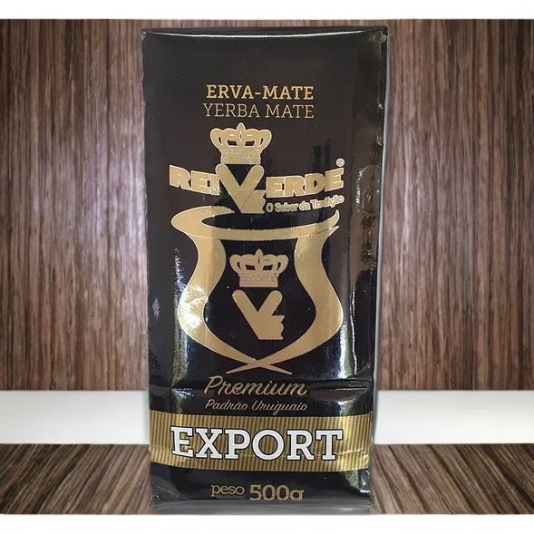

Yerba Baldo
Yerba mate despalada, 1kg. Importada

Yerba Rei Verde
Yerba importada. Despalada. Versión de 1kg.

Yerba Rei Verde Premium
Yerba mate importada, despalada. 1kg.

Yerba Canarias
La favorita de todos. Presentación de 500grs.